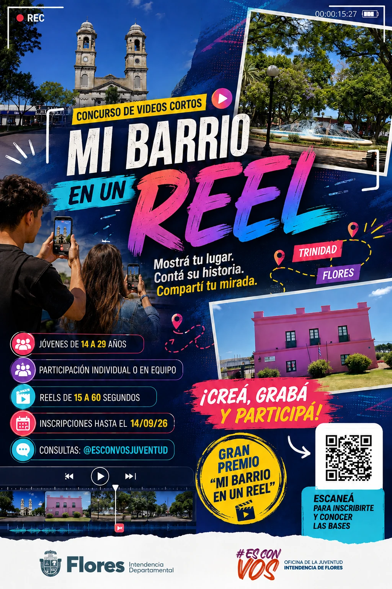

📄
Leé las bases
Revisá requisitos, duración, formato y condiciones del concurso.

CONCURSO DE VIDEOS CORTOS · FLORES
Mostrá tu lugar. Contá su historia. Compartí tu mirada.
● Inscripciones y entrega de Reels hasta el 14 de setiembre de 2026
● Participación individual o en equipo
● Jóvenes de 14 a 29 años
NO LO DEJES PARA DESPUÉS
Tenés tiempo hasta el lunes 14 de setiembre de 2026 a las 23:59.
TU BARRIO, TU HISTORIA
Una idea sencilla puede convertirse en una historia que represente a todo Flores.
Revisá requisitos, duración, formato y condiciones del concurso.
Completá el formulario con tus datos personales o los del equipo.
Mostrá un lugar, una historia, una persona o una experiencia de tu comunidad.
Entregá tu Reel hasta el 14 de setiembre siguiendo las indicaciones establecidas en las bases.
QUÉ PODÉS MOSTRAR
Tu barrio, plaza, localidad, camino o rincón favorito.
Historias, oficios, talentos y protagonistas de la comunidad.
Costumbres, deporte, cultura, naturaleza y vida cotidiana.
RECONOCIMIENTOS
Los trabajos serán valorados de acuerdo con los criterios y reconocimientos establecidos en las bases oficiales.
Consultar bases y reconocimientos →FECHAS IMPORTANTES
Presentación y apertura de la convocatoria.
Completá el formulario y entregá tu Reel.
Revisión de trabajos conforme a las bases.
La información se difundirá por los canales oficiales.
INSPIRATE
“No necesitás una gran producción. Necesitás una mirada auténtica.”
Grabá con tu celular y contá una historia que nazca en Flores.
PREGUNTAS FRECUENTES
Jóvenes de 14 a 29 años vinculados al departamento de Flores, según las condiciones detalladas en las bases.
Sí. La convocatoria admite participación individual o en equipo.
En el formulario oficial disponible en el botón “Formulario de inscripción” de esta página.
En las bases oficiales, disponibles para descargar desde esta página.
Hasta el 14 de setiembre de 2026 a las 23:59 para inscribirte y entregar tu Reel, salvo comunicación oficial posterior.